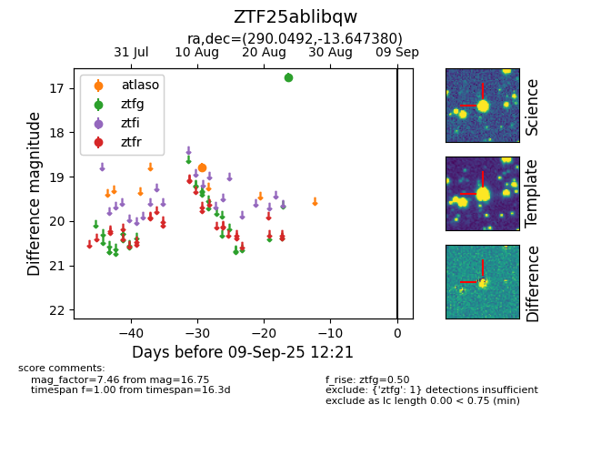

FINK: ZTF25ablibqw
Lasair: ZTF25ablibqw
ALeRCE: ZTF25ablibqw
ZTF25ablibqw (ztf,fink)
equatorial (ra, dec) = (290.0492,-13.64738)
galactic (l, b) = (23.8259,-12.46421)

last atlaso=18.79, ztfg=16.75
1 atlaso, 1 ztfg detections